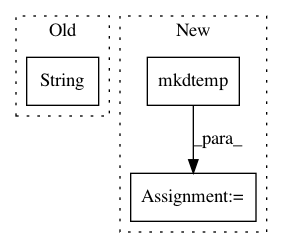

820de79517aaed577f9af9131f5ec87cd432f04a,mltsp/custom_feature_tools.py,,make_tmp_dir,#,359
Before Change
def make_tmp_dir():
container_name = str(uuid.uuid4())[:10]
path_to_tmp_dir = os.path.join("/tmp", container_name)
os.mkdir(path_to_tmp_dir)
return (container_name, path_to_tmp_dir)
After Change
def make_tmp_dir():
path_to_tmp_dir = tempfile.mkdtemp()
return path_to_tmp_dir
def generate_random_str():
In pattern: SUPERPATTERN
Frequency: 3
Non-data size: 3
Instances
Project Name: cesium-ml/cesium
Commit Name: 820de79517aaed577f9af9131f5ec87cd432f04a
Time: 2015-02-06
Author: a.crellinquick@gmail.com
File Name: mltsp/custom_feature_tools.py
Class Name:
Method Name: make_tmp_dir
Project Name: cesium-ml/cesium
Commit Name: f09bc87a441887d53b66f5292ecfd1a9836a3839
Time: 2015-04-15
Author: a.crellinquick@gmail.com
File Name: mltsp/run_in_docker_container.py
Class Name:
Method Name: build_model_in_docker_container
Project Name: cesium-ml/cesium
Commit Name: 6db87ba04e5c298d5e4fa9c6e722b38d5fd0bdb7
Time: 2015-04-21
Author: a.crellinquick@gmail.com
File Name: mltsp/predict_class.py
Class Name:
Method Name: featurize_tsdata